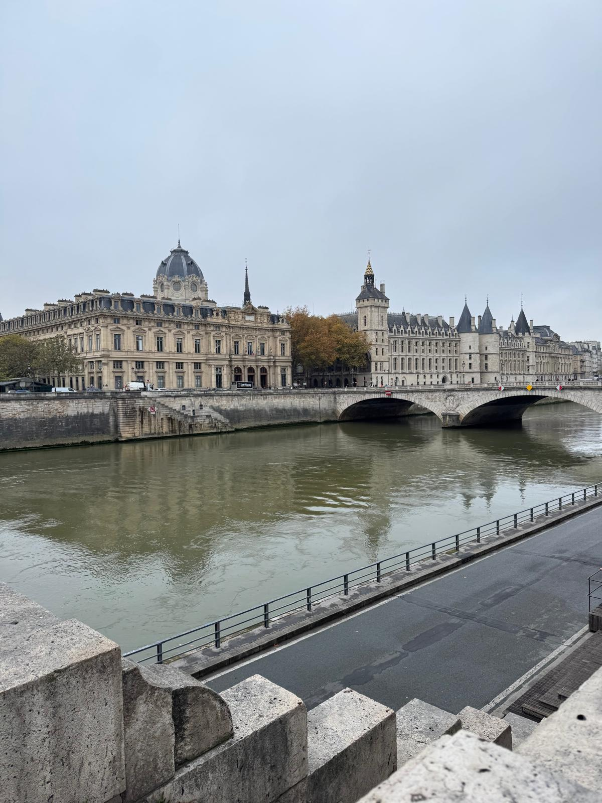

Conciergerie
Basilica neobizantina simbolo della Terza Repubblica. Spunto per riflettere su religione, politica e memoria collettiva.
Approfondisci → VIAGGIO D'ISTRUZIONE — dal 03/11/25 al 08/11/25
VIAGGIO D'ISTRUZIONE — dal 03/11/25 al 08/11/25
Due simboli di Parigi: dalla prigione della Rivoluzione alla torre della modernità
Due tappe per connettere geografia, arte e storia contemporanea.

Basilica neobizantina simbolo della Terza Repubblica. Spunto per riflettere su religione, politica e memoria collettiva.
Approfondisci →
Pagine di democrazia e conflitto (1871): Hôtel de Ville, Place de la Bastille e altri luoghi della memoria civile.
Approfondisci →
Il Musée d’Orsay è un museo unico che trasforma una storica stazione ferroviaria in un tempio dell’Impressionismo e dell’arte moderna.
Approfondisci →Linea 7 - Stazione Châtelet
Esplorazione degli interni storici e prigioni rivoluzionarie.
A piedi o con Metro linea 9.
Salita ai piani superiori e vista panoramica su Parigi.
A piedi o con Metro linea 1 e 9.
Visita all'interno del museo d'Orsay
Linee 7 e 9 - Stazioni Chaussée d'Antin — La Fayette e Alma-Marceau